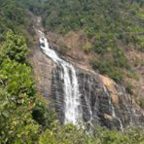

Banavasi
Unchalli Falls
Divinity whispers softly in the rain forests of Western Ghats in south India as the temple town of Banavasi goes about its daily business. The echo of the temple bells travels far and wide epitomising the sacredness of this land. Encircling the holy precincts, the Varadha river flows by… Banavasi is one of the oldest towns in the Karnataka state; it is recognised as the first capital of ancient Karnataka ruled by the Kadamba dynasty .
For the devout, this place is equivalent to heaven on Earth owing to the presence of more than twenty temples; most prominent of them being the Madhukeshwara Temple built in the 9th century by the Kadamba kings. Banavasi is, in fact, regarded as the most ancient spiritual centre of India, after Varanasi. It is referred to as 'Vanavasaka' in the epic Mahabharata, suggesting that the town has existed since 4000 B C. A fifth century copper coin was discovered here recently !
Banavasi and its surroundings are gifted with nature's bounty… rice, sugarcane, spices and pineapple cultivation flourish here. Distinctive agricultural practices, indigenous systems of medicine and traditional dwellings heighten the experience. The traditions, festivals and crafts of bygone days are still in practice. The rusticity is heightened by the soothing presence of lakes teeming with lotuses and water lilies.